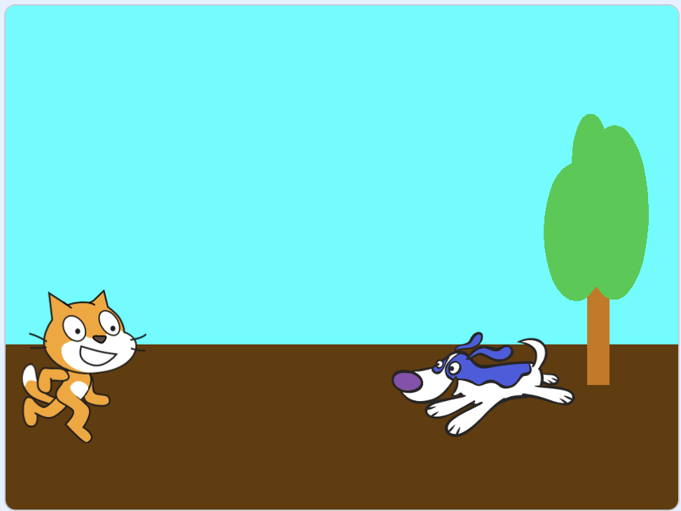
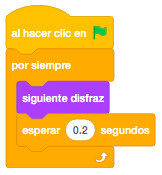
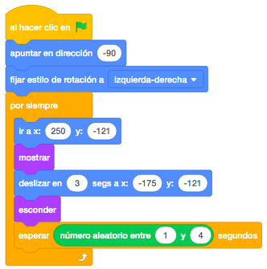
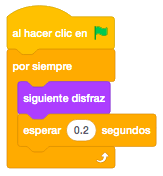
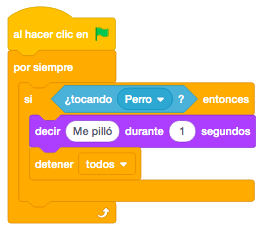
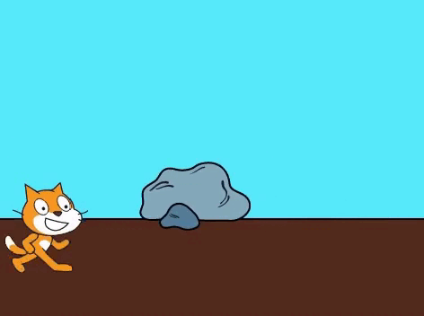

Necesitamos un objeto que será el que salte el obstáculo (nosotros pondremos al gato de Scratch) y otro
objeto que será el personaje saltado (nosotros pondremos un perro). Los buscaremos en la biblioteca de
Scratch.
También, pondremos otro objeto que estará moviéndose continuamente hacia la izquierda para que parezca que
el escenario se mueve. En este caso hemos puesto unas rocas, también de la biblioteca.
Pintaremos un escenario que tenga dos terceras partes de color azul (cielo) y una tercera parte de color marrón (tierra). También podemos seleccionar un escenario de la biblioteca.
El juego consiste en que nuestro personaje (el gato) tiene que saltar al otro personaje (el perro) para que
no le pille. Además, en el fondo irá pasando una roca para simular que vamos andando.
Empezaremos programando el gato, posicionándolo en la parte izquierda de la pantalla y realizando el
movimiento del salto, utilizando el bloque "Deslizar En Segs A X: Y:", al pulsar la tecla espacio.

Ahora cambiaremos continuamente el disfraz, entre los dos que tiene, para simular que anda.

Pondremos ahora el perro y le apuntaremos hacia la izquierda. Cambiaremos el estilo de rotación para que no
se dé la vuelta.
Para moverlo, lo posicionaremos en la parte derecha de la pantalla, a la altura del gato, lo mostraremos y
lo deslizaremos hasta el final de la parte izquierda de la pantalla con el bloque "Deslizar". Al llegar a esa
posición, lo ocultamos y lo volvemos a posicionar para que vuelva a hacer lo mismo, esperando entre 1 y 4
segundos para que no sea siempre igual.

También cambiaremos continuamente el disfraz del perro para darle más vida.

Volvemos al gato. Ahora vamos a programar que cuando el gato toque al perro, mostraremos el mensaje "Me pilló" y terminaremos el juego.

Si vemos que saltarlo es muy difícil, podemos hacer más pequeño el tamaño del perro.
También podemos controlar el salto del gato con sonido. En lugar de hacer saltar al gato cuando pulsemos la
tecla espacio, podemos hacerlo comprobando el volumen del sonido ambiente para que salte al dar una palmada.
Para ello, controlaremos que el "Volumen Del Sonido" sea mayor de 40 para hacerlo saltar. Quitaremos el
control del espacio para que no interfiera.

Por último, programaremos la roca. La mandaremos a la capa trasera para que se mueva por detrás de los
personajes.
Esperaremos un número aleatorio de segundos para que aparezca y la situaremos a la derecha de la pantalla y
la moveremos hacia la izquierda mediante un bloque "Deslizar" y volveremos a repetir la operación.

Podemos añadirle al juego vidas de nuestro personaje, un sonido cada vez que me pilla y una pantalla final de "Game Over" en lugar de parar el juego.
Y el juego quedaría así.

Para ver el juego terminado pulsa
aquí.
Para descargarte el juego terminado pulsa
aquí.